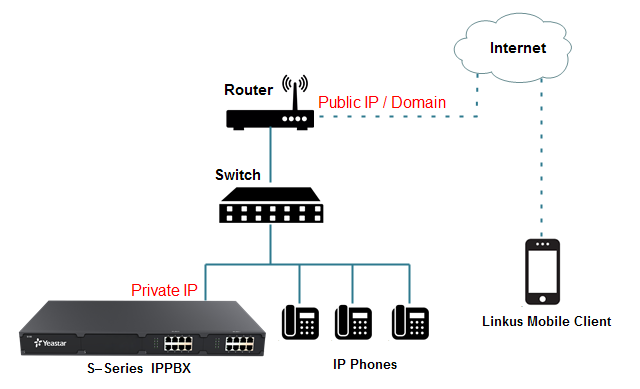
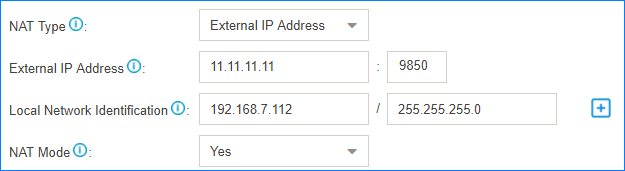
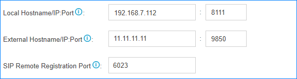
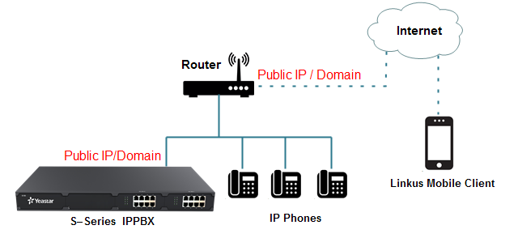
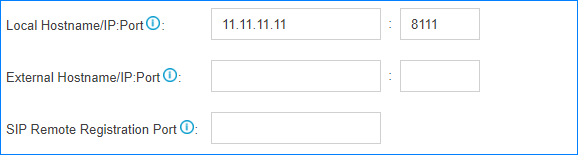
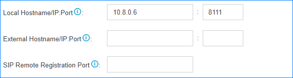

Set up Linkus Server without LCS
If you don't use Linkus server with LCS, you need to configure the Linkus server according to your network environment.
PBX is Behind a Router
If the PBX is behind a router and the Linkus communicates with the PBX through the network interface that is configured with a private IP, you need to do port forwarding and configure NAT on your PBX.

To make Linkus work in an external network, configure the following settings.
- Forward ports on the router that is connected to the PBX.
Port Default Value Linkus Local Port UDP 8111 TCP 8111
SIP Registration Port UDP 5060 RTP Ports UDP 10000-12000 - Log in the PBX web interface, go to , configure NAT settings.

- NAT Type: Select a type according to your network environment.
- External IP Address: Enter the public IP address or the domain name of the router, and enter the external SIP port.
- Local Network Identification: Enter the local IP address and subnet mask of the PBX.
- NAT Mode: Select
Yes.
- Go to , check the option Enable Linkus Server .
- Configure the Linkus server without LCS.

- Local Hostname/IP:Port: Enter the local IP address of the PBX and Linkus local port.
- External Hostname/IP:Port: Enter the
public IP address or domain name of the router and the external
port of Linkus server.
In this example, we forwarded Linkus local port 8111 to external port 9850, so we enter 9850 here.
- SIP Remote Registration Port: Enter the
SIP external port.
In this example, we forwarded SIP local port 5060 to external port 6023, so we enter 6023 here.
PBX is Connected to a Public IP Address
If the PBX is connected to a carrier's router and the Linkus communicates with the PBX through the network interface that is configured with a public IP, you do NOT need to do port forwarding and configure NAT on your PBX.

- Go to , check the option Enable Linkus Server .
- Configure the Linkus server without LCS.

- Local Hostname/IP: Port: Enter the IP address of the router and the Linkus local port.
PBX is Connected to a VPN Network
You do NOT need to do port forwarding on your router. Configure the Linkus server settings as below.
- Go to , check the option Enable Linkus Server.
- Configure the Linkus server without LCS.

- Local Hostname/IP:Port: Enter the VPN IP address of the PBX and the Linkus local port.